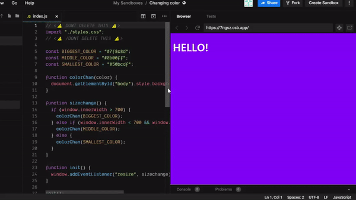
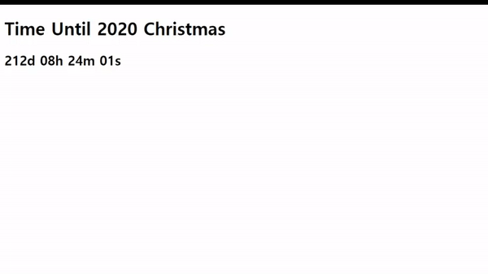
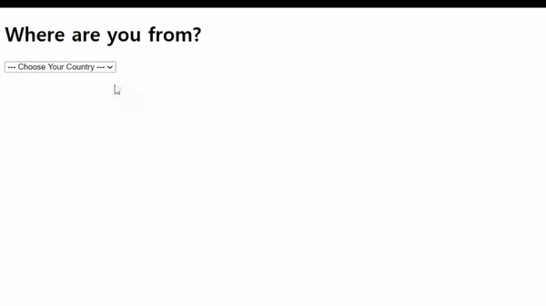
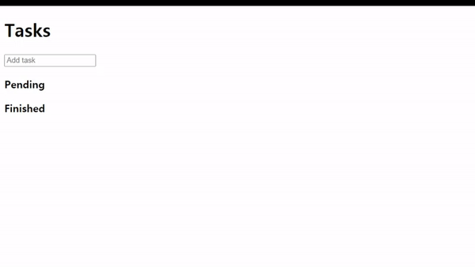
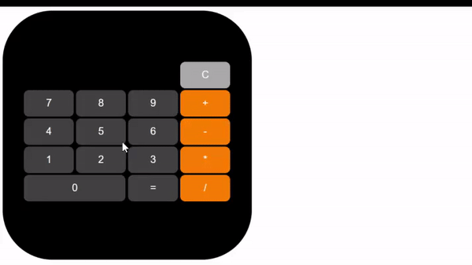

Javascript 동적기능
2020.04.23
『Changing Color』 창 크기에 따라서 배경색이 변하는 웹 VIEW CODE 
2020.04.25
『Time Until Christmas』 2020 크리스마스때까지 남은 시간을 확인하는 웹 VIEW CODE 
2020.04.26
『Where Are You From?』 Localstorage를 이용해 선택한 나라를 보여주는 웹 VIEW CODE 
2020.04.28
『To-do List』 Localstorage를 이용해 Pending과 Finished로 나눠 To-Do list를 보여주는 웹 VIEW CODE 
2020.04.29
『Random Number Game』 0~200까지 자유롭게 범위를 설정하고, 그 범위 내의 수 맞추는 게임 VIEW CODE
2020.05.01
『Calculator』 계산기 기능을 사용할 수 있는 웹 VIEW CODE 
2020.05.04
『Momentum Clone Coding』 크롬 모멘텀 확장 프로그램을 클론코딩한 웹 VIEW CODE ① 사용자의 위치정보를 이용해 해당 도시의 날씨정보를 보여줌 ② Localstorage를 이용해 사용자의 닉네임을 저장하여 입력한 문장을 보여줌 ③ Localstorage를 이용해 Todo List를 보여줌